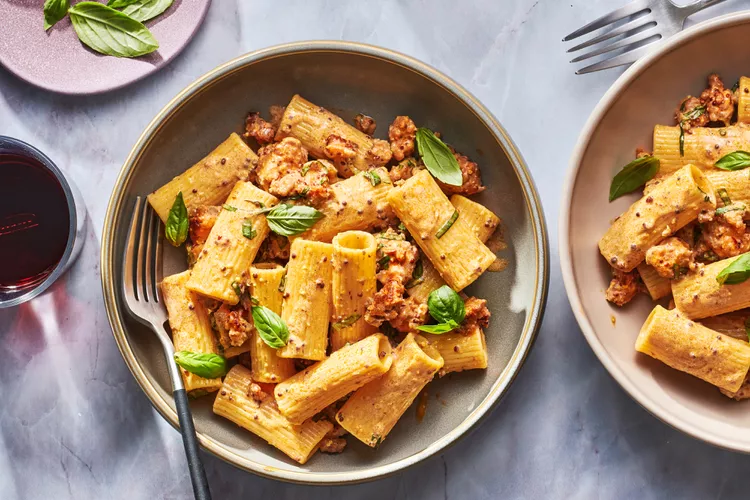

Sausage Pasta
Home

Recipe Description
This pasta with sausage and mustard is perfect for a cool fall or winter evening.
It comes together quickly, so it's as suited for a busy weeknight as it is a cozy weekend.
Ingredients
- 1 pound penne, rigatoni, or medium shells
- 1 tablespoon extra-virgin olive oil
- 8 hot Italian sausages, meat removed from casings and crumbled (about 1 1/2 pounds)
- 3/4 cup dry white wine
- 3/4 cup heavy cream
- 3 tablespoons grainy mustard
- Pinch of crushed red pepper
- 1 cup thinly sliced basil
Instructions
-
Gather ingredients.
-
Cook the pasta in a large pot of boiling salted water until al dente and then drain.
-
Meanwhile, heat the olive oil in a large, deep skillet. Add the sausage meat and brown over moderately high heat, about 5 minutes.
-
Add the wine and simmer, scraping up the browned bits from the bottom, until reduced by half, about 5 minutes.
-
Add the cream, mustard, and crushed red pepper and simmer for 2 minutes.
-
Remove the skillet from the heat, add the pasta and basil, and toss to coat.
-
Serve at once.